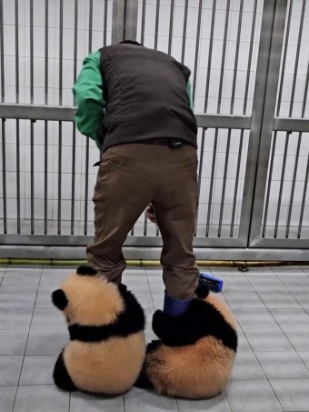

진핵생물의 계(界)중 하나로, 절대 다수가 유기물을 먹고 사는 종속영양유기체다. 일반적으로 신경계를 갖고 있어 자극에 반응한다. 통념상 자율적으로 움직이는 생물을 동물로 보지만, 동물계를 정의하는 기준이 운동성만으로 결정되지 않는다. 해면과 산호는 움직이지 못하지만 동물이고, 식충식물은 움직일 수 있지만 식물이다. 다만 유전적으로 분류하는 현대 분류학에서 진핵생물 중 단편모 생물, 그중에서도 후편모 생물중에 다세포를 이루는 생물을 말한다. 일반적으로 사람은 동물에서 제외하는 경우가 많다. 동물보호법 상으로는 포유류, 조류, 일부 파충류, 양서류, 어류만을 의미한다. 아리스토텔레스가 최초로 구분한 생물의 계통에서 '감각이 있는지'(sensitive)를 기준으로 감각이 있는 것을 동물, 감각이 없는 것을 식물로 나누었다. 그리고 이성까지 갖추면 '사람'으로 보았다. 그렇게 bios / zoë / psuchë라는 각 단계의 영혼이 있어서 식물은 bios만 가지고, 동물은 bios와 zoë를, 인간은 bios, zoë, psuchë를 모두 가지고 있다고 서술했다. 동물/식물의 구분법은 유아 교육용도로 일부 사용되는것과 달리 동물/인간의 구분은 오늘날 쓰이지 않고 있다. 이 동식물 분류 방식은 카를 폰 린네의 계급분류기준까지 이어져 내려오고 있을 정도로 명쾌히 구분된 대분류라 할 수 있다. 동양에서는 새와 짐승과 물고기와 벌레로 나누는 것이 일반적이었고 이들을 아우르는 개념은 없었다. 전통적인 분류를 오늘날의 생물학 분류로 치면 다음과 같다.
